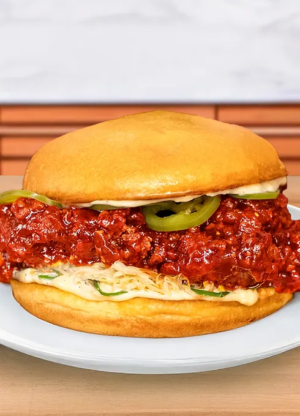

Home
The Perfect Spicy Chicken Sandwich
(by Joshua Weissman)

Description
Do you know what is better than a chicken sandwich? A spicy chicken sandwich. Do you know what's better than a spicy chicken sandwich? The Perfect Spicy Chicken Sandwich. This recipe from Joshua Weissman, a popular and well-respected YouTube chef, in his words, will be the most work you'll put into making a chicken sandwich. But it's worth it. I think. I've never made it myself, but golly gee, it looks tasty!
Servings: 6-8
Prep Time: 30 minutes, plus overnight marinade
Active Time: 1 hour
Ingreidents
Marinade:
- 2 lbs (908g) bone-in skin-on chicken thighs, about 6-8
- 1.5 cups (360mL) buttermilk
- 2 Tbsp (30mL) hot sauce
- 1 tsp (3g) white pepper
- 1 Tbsp (16g) gochujang
- 1.5 tsp (5g) MSG
- 1 Tbsp (10g) kosher salt
- 2 tsp (6g) sugar
- 2 tsp (6g) garlic powder
Pickled Jalapeños:
- 5-7 large jalapenos, very thinly sliced
- 1 cup (240mL) white distilled vinegar
- 1 cup (240mL) water
- 1 Tbsp (12g) kosher salt
- 3 Tbsp (27g) sugar
- 3 large sprigs dill
- 2 cloves garlic, peeled and lightly crushed
Chicken Sauce:
- ¼ cup (64g) gochujang
- 3 Tbsp (48g) ketchup
- 2 Tbsp (30g) dark soy sauce
- 2 Tbsp (30g) sweet soy sauce
- 2 Tbsp (32g) honey
- 2 Tbsp (30g) white distilled vinegar
- 4 cloves garlic, finely minced
Garlic Mayo:
- 1 cup (236g) kewpie mayonnaise
- ¼ tsp (<1g) MSG
- 2-3 cloves garlic, finely grated
- Kosher salt and freshly cracked black pepper, to taste
Slaw:
- 2 cups green cabbage, cored and very thinly sliced
- 1 cup kimchi, drained of juice and very finely chopped (optional)
- 2 green onions, very thinly sliced on a bias
- 1 clove garlic, finely grated
- 2 Tbsp (30g) kewpie mayonnaise
- Kosher salt, to taste
Dredge and Fry:
- 2 cups (300g) all-purpose flour
- ½ cup (75g) potato starch
- 2 tsp (6g) kosher salt
- 1 tsp (3g) MSG
- 1 tsp (3g) cayenne powder
- 1 tsp (3g) garlic powder
- ½ tsp (1g) onion powder
- 2 tsp (6g) black pepper
- 1 tsp (3g) baking soda
- 3.5 quarts (3.3 L) high temperature cooking oil
Assembly:
- Unsalted butter for toasting
- 6-8 Brioche, or other high quality sandwich buns
Directions:
Marinade:
- Start by deboning your chicken thighs. Flip them over so the skin side is against your cutting board. Find the bone with your fingers. Using a sharp paring knife, cut along the length of the bone, keeping your knife directly on the center of the bone. Using the back of your knife scrape away the meat around the bone to reveal it completely. You can essentially scrape the bone out of the thigh until you get to the edges where the knuckle portions of the bone are connected with the chicken. To free the remainder of the bone, simply cut the bone away from the meat from those connecting points, there will be two on either side of the thigh bone. You can see how its done here. Leave the skin on the chicken.
- Combine all ingredients except the chicken in a large bowl and whisk together until thoroughly combined. Add your deboned chicken thighs and marinate covered in the fridge overnight.
Pickled Jalapeños:
- In a medium sauce pot, add vinegar, water, salt, and sugar. Set over medium-high heat and bring to a boil. In a pint-sized heat-proof container, add the jalapenos. Once the solids have dissolved, pour the pickling liquid over the jalapenos. Press a piece of plastic wrap or paper towel right on top of the surface to ensure everything stays completely submerged then let cool to room temperature. Once cool, add the dill and garlic. Cover with a tight fitting lid and refrigerate until ready to use.
Sauce:
- Add all of the ingredients except the garlic to a 1-2 quart sauce pot. Bring to a boil over medium-high heat. Once boiling, cut the heat then stir in the garlic.
Slaw:
- Combine the cabbage, kimchi, green onion, and garlic. Only once you are ready to serve everything , add in the mayo season to taste with salt, and toss everything until evenly incorporated.
Garlic Mayo:
- Combine all of the ingredients and whisk together until fully combined. Season to taste with salt and freshly cracked black pepper.
Dredge:
- In a large bowl, combine everything except the baking soda. Whisk together until thoroughly combined.
Assembly:
- Remove the chicken from the marinade and set on a plate or sheet tray. To your marinade, whisk in a ½ cup of your dredge and the remaining 1 teaspoon of baking soda. Flick a couple tablespoons of your now wet batter into the dry dredge. Whisk so you get small pea sized lumps in your dredge. Dunk your chicken back in your marinade then in your dredge. Press firmly to adhere the dredge to the chicken. Once your chicken is thoroughly coated, place it on a clean plate or sheet tray and repeat with all your chicken pieces.
- Fill a large 7-quart heavy bottomed pot with the oil, making sure not to fill more than about halfway up. Heat over medium heat until it reaches 300°F (149°C). Fry your chicken in batches for about 2-4 minutes or until the chicken is cooked through and the bubbling has subsided. Remove and drain over a wire rack. There won’t be much color on the chicken yet. Increase the heat until the temperature reaches 350°F (177°C) and fry your chicken in batches again until golden brown and crispy. Drain on paper towels.
- In a large pan, heat a couple tablespoons of butter over medium heat until melted and bubbling. Add your buns cut side down and toast for about 2 minutes or until golden brown toasted on both sides. Repeat with all the remaining buns. In a large bowl toss your chicken with your chicken sauce.
- To assemble your sandwich, start with a generous tablespoon or two of garlic mayo on the bottom and top bun. On the bottom bun add your slaw, then your sauced chicken, some pickled jalapeños on top of your chicken and then your mayo'd top bun. Repeat with all your sandwiches. Serve and enjoy!